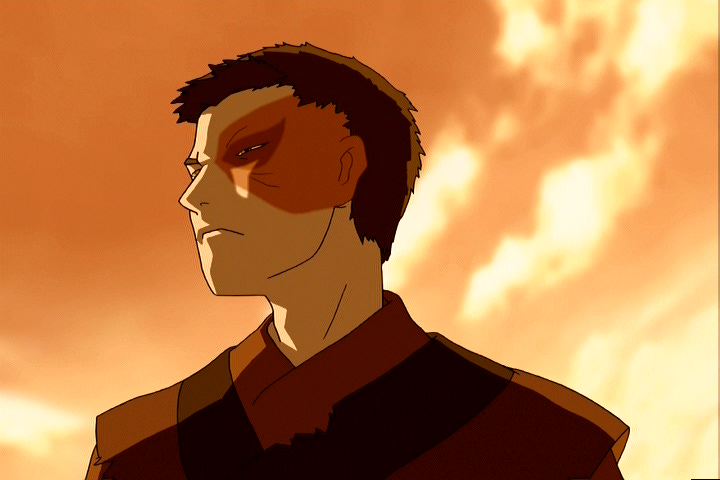

Season 1
In season 1 of the show Avatar: The Last Airbender, Zuko is shown to be one of the main antagonists. His goal is to hunt down and capture Aang, the avatar and protagonist, to bring him to his father, the Firelord, and "regain his honor".
Season 2
In season 2, Zuko has to live as a refugee, as he's failed over and over again, so his sister, Azula, was sent to capture Aang instead. He struggles a lot and is very conflicted, but eventually, he ends up being welcomed back as the prince of the Fire Nation...
Season 3
In season 3, Zuko realizes that he's been in the wrong, and he decides to make it right. He joins Aang and "Team Avatar", and they work together to defeat the Firelord.